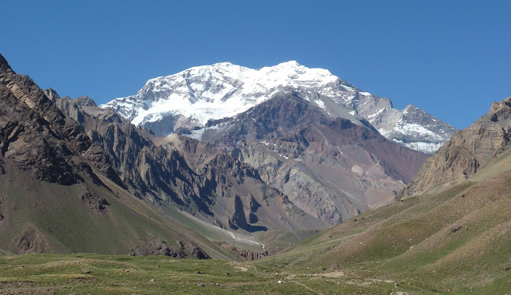
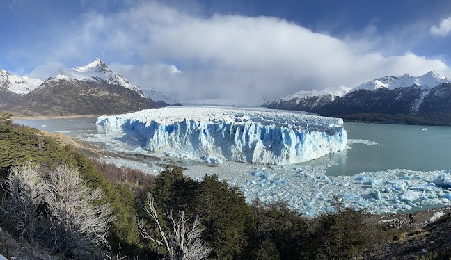
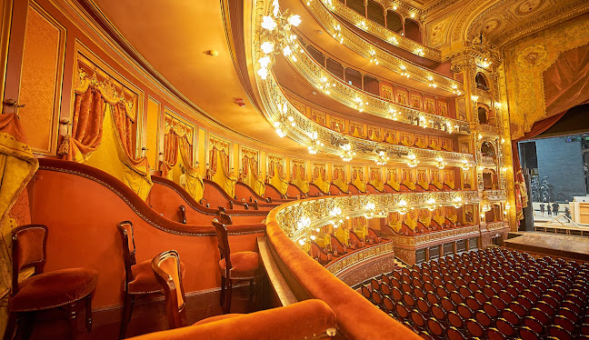
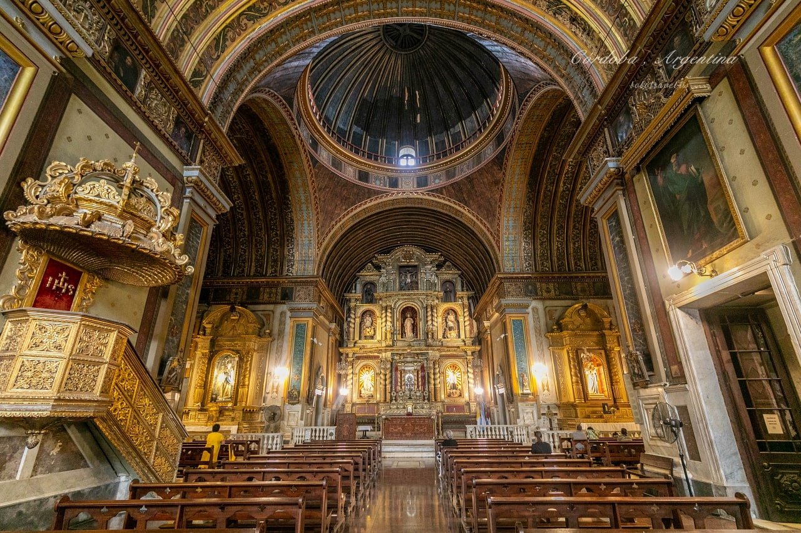
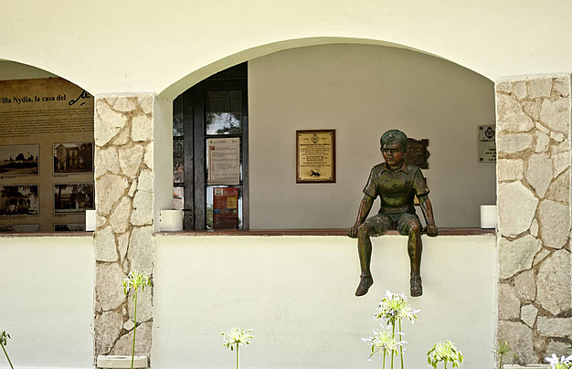
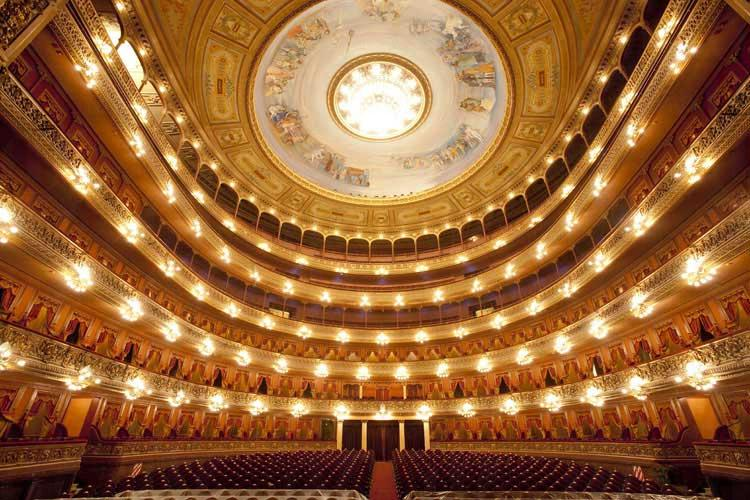
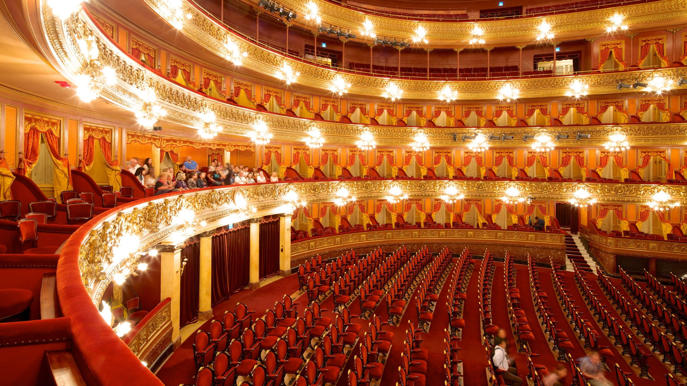
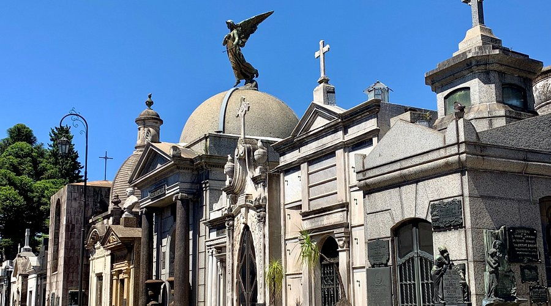

是阿根廷人口數量僅次於布宜諾斯艾利斯的城市，也是全國面積最大的城市。這裡也是該地區重要的文化、經濟、教育、金融和娛樂中心。 哥多華被稱為「學識之城」（La Docta）或「鐘聲之城」（西班牙語：La Ciudad de las Campanas）。
融合了西班牙殖民地巴洛克風格、新古典主義，還帶有一點穆得哈爾風與文藝復興元素，被聯合國教科文組織科列為世界文化遺產

切格瓦拉博物館位於阿根廷上格拉西亞，在上世紀30年代，切格瓦拉曾經在附近的幾幢房子里居住過。其中較早居住的一幢房子
已被改建成為切格瓦拉博物館，館內主要展示了切格瓦拉早期的生活場景以及用過的一些物品。
開放時間 : 9:00 ~ 19:00

是阿根廷的首都和最大城市，位於拉布拉他河南岸、南美洲東南岸、對岸為烏拉圭（東方）。布市是構成阿根廷的24個行政區之一。整座城市被分為15個大區（Comuna）並總共聚集48個小區
是號稱僅次於紐約大都會歌劇院Metropolitan Opera House及米蘭拉斯卡拉劇院Teatro alla Scala的世界第三大歌劇院之一， 也是音響效果最好的劇院，歌劇院融合了法國，義大利，希臘，德國風格的文藝復興式建築，是世界最豪華的歌劇院之一。
導賞團票價 : AR$800/人
開放時間 : 9:00 ~ 17:00


建立於1822年，占地面積四萬平方米，是布宜諾斯艾利斯最古老的公墓，也是世界最著名的十座墓地之一。在雷科萊塔墓地， 除了第一夫人伊娃外，其它埋葬的都是社會上的顯赫人士，政治家，教育家，領導人等等。
